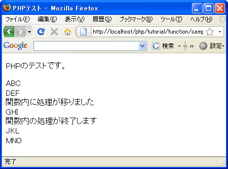

関数の定義と呼び出し
では関数の定義の仕方から確認していきます。基本的な書式は次の通りです。
function 関数名(引数1, 引数2, ...){
実行される処理1;
実行される処理2;
}
関数は複数の処理をまとめたもので、プログラムの中から呼び出されるとブロック内に記述された処理を順に実行します。
関数は複数定義することができるため識別するための名前を付ける必要があります。関数名として利用できる文字列は先頭がアンダーバーかアルファベットで始まり、その後にアンダーバー、数字、アルファベットが続くものです。変数名とは異なり大文字と小文字の区別はありませんので注意して下さい。(例えばDispでもDISPでもdispでも同じ関数名となります)。
引数は呼び出し元から関数に何らかの値を渡したい場合に使用するものでパラメータとも呼びます。引数は必要なだけ記述できます。詳しくは次のページ以降で確認します。
例えば次のように記述します。
function hello(){
print 'hello';
}
この関数は関数名が「hello」で引数はありません。関数が呼び出されると「print 'hello';」だけを実行して終了します。
関数の呼び出し
関数を定義したらプログラムの中から関数を呼び出して使用します。関数を呼び出す時の書式は次の通りです。
関数名(引数1, 引数2, ...);
関数を呼び出す時には関数名の後の「(」と「)」の間に引数を指定して呼び出します。引数が1つも無い場合でも「(」と「)」は省略できません。
また関数を呼び出すと値を返してくる場合があります。例えば計算を行うような関数を定義した場合、戻り値として計算結果などを返してきます。その場合は次のように記述することで関数から返された値を変数に対して代入出来ます。(戻り値についても次のページ以降で確認します)。
変数 = 関数名(引数1, 引数2, ...);
例えば先ほど定義した関数「hello」を呼び出すには次のように記述します。
function hello(){
print 'hello';
}
hello();
引数はありませんので関数名()の形式で呼び出します。
なお関数は関数呼び出しよりも前で定義しても後で定義しても構いません。今までの例では先に関数を定義してから呼び出しを行っていますが次のように関数呼び出しの後で定義も可能です。
hello();
function hello(){
print 'hello';
}
関数がある場合のプログラムの処理の流れ
通常プログラムは記述された順に上から下へ実行されていきますが、関数内に記述された処理は関数が呼び出されるまで実行されません。そして関数呼び出しが行われるといったん関数内の処理を実行した後で、関数呼び出しの次の行へ再度処理が移ります。
function hello(){
print 'DEF';
}
print 'ABC';
hello();
print 'GHI';
上記ではまず関数の定義が行われていますが関数内の処理は実行されません。最初に実行されるのは「print 'ABC';」です。そして次に「hello();」で関数の呼び出したが行われます。すると処理はいったん関数「hello」内に移動し「print 'DEF';」が実行されます。関数内のブロックの最後まで処理が進むと関数を呼び出した「hello();」の次の行へ処理が進み「print 'GHI';」が実行されることになります。
サンプルプログラム
では簡単なプログラムで試して見ます。
<!DOCTYPE html PUBLIC "-//W3C//DTD XHTML 1.0 Transitional//EN"
"http://www.w3.org/TR/xhtml1/DTD/xhtml1-transitional.dtd">
<html xmlns="http://www.w3.org/1999/xhtml" xml:lang="ja" lang="ja">
<head>
<meta http-equiv="Content-Type" content="text/html;charset=UTF-8" />
<title>PHPテスト</title>
</head>
<body>
<p>PHPのテストです。</p>
<p>
<?php
function test(){
print '関数内に処理が移りました<br />';
print 'GHI<br />';
print '関数内の処理が終了します<br />';
}
print 'ABC<br />';
print 'DEF<br />';
test();
print 'JKL<br />';
print 'MNO<br />';
?>
</p>
</body>
</html>
上記のファイルをWWWサーバのドキュメントルート以下に設置しブラウザからアクセスすると次のように表示されます。

( Written by Tatsuo Ikura )

著者 / TATSUO IKURA
初心者～中級者の方を対象としたプログラミング方法や開発環境の構築の解説を行うサイトの運営を行っています。